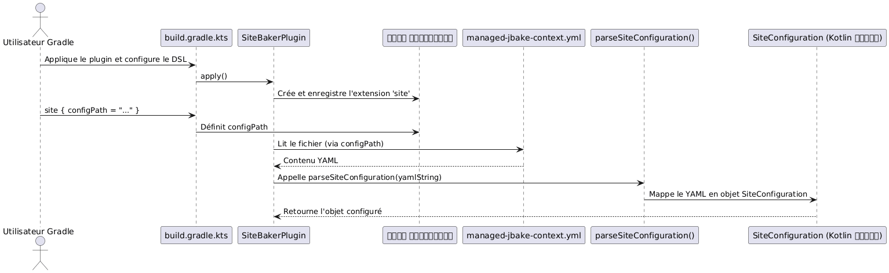

लेख 3 : TDD के साथ YAML पार्सिंग के लिए Jackson का Gradle प्लगिन में एकीकरण
Publié le 25 September 2025
परिचय
Gradle प्लगिन डेवलपमेंट में, जटिल कॉन्फ़िगरेशन का प्रबंधन एक सामान्य कार्य है। DSL को हज़ारों प्रॉपर्टीज़ से ओवरलोड करने के बजाय, अक्सर साफ और मेंटेनेबल रखने के लिए कॉन्फ़िगरेशन को YAML जैसे बाहरी फ़ाइल में परिभाषित करना बेहतर होता है। यह लेख आपको Jackson की शक्तिशाली लाइब्रेरी को इंटीग्रेट करने के माध्यम से मार्गदर्शन करता है, जिससे YAML फ़ाइलों को Kotlin ऑब्जेक्ट्स में पार्स किया जा सके, एक कड़ी TDD पद्धति अपनाकर हमारे प्लगिन की रोबस्टनेस सुनिश्चित की जा सके।site-baker.
1. संदर्भ : हमारा प्लग़िन `site-baker
हमारा प्लगइन`site-baker`इसे एक स्थिर साइट की पीढ़ी और तैनाती को स्वचालित करने के लिए डिज़ाइन किया गया है। इसे YAML कॉन्फ़िगरेशन फ़ाइल पढ़ने की आवश्यकता है (managed-jbake-context.yml) स्रोतों के पथ, तैनाती के गंतव्य, और Git पहचानकर्ता जैसी जानकारी प्राप्त करने के लिए
हम जो YAML कॉन्फ़िगरेशन पार्स करना चाहते हैं, वह इस तरह दिखता है :
bake:
srcPath: "./site/jbake"
destDirPath: "bake"
cname: "cheroliv.com"
pushPage:
from: "bake"
to: "cvs"
repo:
name: "trainings"
repository: "https://github.com/pages-content/pages-content.github.io.git"
credentials:
username: "USERNAME"
password: "SECRET_TOKEN"
branch: "main"
message: "cheroliv.com"
# ... autres configurations (pushMaquette, supabase, etc.)2. कॉन्फ़िगरेशन मॉडलिंग कोटलिन में
पार्स करने से पहले, हमें कोटलिन में अपने डेटा की संरचना परिभाषित करनी होगी। जैक्सन इन क्लासेस का उपयोग करके YAML सामग्री को स्वचालित रूप से मैप करेगा।
// plugin/src/main/kotlin/com/cheroliv/site/baker/data/SiteConfiguration.kt
package com.cheroliv.site.baker.data
import com.fasterxml.jackson.databind.ObjectMapper
import com.fasterxml.jackson.dataformat.yaml.YAMLFactory
import com.fasterxml.jackson.module.kotlin.readValue
import com.fasterxml.jackson.module.kotlin.registerKotlinModule
fun parseSiteConfiguration(yaml: String): SiteConfiguration {
val mapper = ObjectMapper(YAMLFactory()).registerKotlinModule()
return mapper.readValue(yaml)
}
data class GitPushConfiguration(
val from: String = "",
val to: String = "",
val repo: RepositoryConfiguration = RepositoryConfiguration(),
val branch: String = "",
val message: String = "",
)
data class RepositoryConfiguration(
val name: String = "",
val repository: String = "",
val credentials: RepositoryCredentials = RepositoryCredentials(),
) {
companion object {
const val ORIGIN = "origin"
const val CNAME = "CNAME"
const val REMOTE = "remote"
}
}
data class RepositoryCredentials(val username: String = "", val password: String = "")
data class SiteConfiguration(
val bake: BakeConfiguration = BakeConfiguration(),
val pushPage: GitPushConfiguration = GitPushConfiguration(),
val pushMaquette: GitPushConfiguration = GitPushConfiguration(),
val pushSource: GitPushConfiguration? = null,
val pushTemplate: GitPushConfiguration? = null,
val supabase: SupabaseContactFormConfig? = null
)
data class BakeConfiguration(
val srcPath: String = "",
val destDirPath: String = "",
val cname: String? = null,
)
// ... (autres data classes pour Supabase, si nécessaire)फ़ंक्शन`parseSiteConfiguration`यह हमारे डीज़ीसीरियलाइज़ेशन के लिए प्रवेश बिंदु है। यह उपयोग करती है`ObjectMapper`Jackson का, कॉन्फ़िगर किया गया`YAMLFactory`YAML प्रारूप के लिए और`registerKotlinModule()`कोटलिन की विशिष्टताओं के समर्थन के लिए (जैसे प्रॉपर्टी के डिफ़ॉल्ट मान).
3. Jackson का build.gradle.kts में एकीकरण
जैकसन का उपयोग करने के लिए, हमें आवश्यक निर्भरताएँ जोड़नी हैं में`build.gradle.kts`हमारे मॉड्यूल का`plugin`(No output)
// plugin/build.gradle.kts
dependencies {
// Jackson for YAML parsing
implementation("com.fasterxml.jackson.module:jackson-module-kotlin:2.18.3")
implementation("com.fasterxml.jackson.dataformat:jackson-dataformat-yaml:2.18.3")
// ... autres dépendances
}हम उपयोग करते हैं`jackson-module-kotlin`कोटलिन समर्थन के लिए और`jackson-dataformat-yaml`YAML प्रारूप के प्रबंधन के लिए
4. TDD पद्धति: YAML पार्सिंग का परीक्षण
अब, हम अपने पार्सिंग लॉजिक को सत्यापित करने के लिए TDD लागू करते हैं।
4.1. Test Unitaire : Mapper le YAML en Objet Kotlin
हम एक यूनिट टेस्ट से शुरू करते हैं`SiteBakerPluginTest.kt`फ़ंक्शन की जाँच करने के लिए`parseSiteConfiguration`यह YAML स्ट्रिंग को सही ढंग से ऑब्जेक्ट में बदल सकता है`SiteConfiguration`.
// plugin/src/test/kotlin/com/cheroliv/site/baker/SiteBakerPluginTest.kt
@Test
fun `can map configuration text to SiteConfiguration object`() {
val yamlString = "../../managed-jbake-context.yml"
.run(::File)
.readText()
.trimIndent()
val config: SiteConfiguration = parseSiteConfiguration(yamlString)
assertEquals("cheroliv.com", config.bake.cname)
assertEquals("main", config.pushPage.branch)
assertEquals("https://github.com/pages-content/pages-content.github.io.git", config.pushPage.repo.repository)
}यह परीक्षण फ़ाइल की सामग्री पढ़ता है`managed-jbake-context.yml`(जो परीक्षण वैध होने के लिए मौजूद होना चाहिए) और वस्तु पर दावे करता है`SiteConfiguration`परिणामी. यह सत्यापित करता है कि YAML की मुख्य मान सही ढंग से मैप की गई हैं।
4.2. कार्यात्मक परीक्षण : कॉन्फ़िगरेशन फ़ाइल की पढ़ी को मान्य करें
यह सुनिश्चित करने के लिए कि प्लगइन अपने DSL के माध्यम से कॉन्फ़िगरेशन फ़ाइल पढ़ सके और पार्सिंग एक वास्तविक Gradle वातावरण में काम करे, हम एक फ़ंक्शनल टेस्ट जोड़ते हैं`SiteBakerPluginFunctionalTest.kt`.
यह परीक्षण महत्वपूर्ण है क्योंकि यह वास्तविक प्रोजेक्ट में प्लगिन के निष्पादन का अनुकरण करता है। इसे होना चाहिएहवा-रोधी, यानी उसे स्वयं फ़ाइल बनानी चाहिए`managed-jbake-context.yml`नियंत्रित सामग्री के साथ, परीक्षण की पुनरुत्पादन क्षमता और अलगाव सुनिश्चित करने के लिए।
// plugin/src/functionalTest/kotlin/com/cheroliv/site/baker/SiteBakerPluginFunctionalTest.kt
@Test
fun `config file contains good data`(){
val configContent = configFile.readText(UTF_8)
// Vérifications comme dans vos commentaires
assertTrue(configContent.contains("bake"))
assertTrue(configContent.contains("pushPage"))
assertTrue(configContent.contains("repository"))
}यह कार्यात्मक परीक्षण सत्यापित करता है कि परीक्षण के अस्थायी निर्देशिका में कॉपी किया गया कॉन्फ़िगरेशन फ़ाइल अपेक्षित डेटा रखता है। यद्यपि यह परीक्षण सीधे YAML को Kotlin ऑब्जेक्ट में नहीं पार्स करता, यह फ़ाइल की उपस्थिति और उसकी सामग्री को मान्य करता है, जो प्लगइन द्वारा पार्सिंग के लिए एक आवश्यक प्रारंभिक चरण है।
5. पार्सिंग फ़्लो का दृश्यीकरण
आरेख निम्नलिखित YAML कॉन्फ़िगरेशन के पार्सिंग के दौरान डेटा प्रवाह और इंटरैक्शन को दर्शाता है:

निष्कर्ष
TDD दृष्टिकोण का पालन करते हुए, हमने Gradle प्लगिन के भीतर Kotlin ऑब्जेक्ट्स में YAML कॉन्फ़िगरेशन फ़ाइलों को पार्स करने के लिए जैक्सन लाइब्रेरी को सफलतापूर्वक इंटीग्रेट किया। इस विधि ने हमें करने की अनुमति दी :
-
स्पष्ट रूप से मॉडलिंगहमारी कॉन्फ़िगरेशन Kotlin डेटा क्लासेस के साथ।
-
पार्सिंग लॉजिक को सत्यापित करेंलक्षित यूनिट परीक्षणों के साथ।
-
समेकन सुनिश्चित करेंवास्तविक Gradle वातावरण में हर्मेटिक कार्यात्मक परीक्षणों के माध्यम से।
यह ठोस आधार हमें हमारे प्लगइन को ऐसी सुविधाओं के साथ विस्तार करने के लिए भरोसा दिलाता है जो इस कॉन्फ़िगरेशन पर आधारित हैं, साथ ही कोड की बनाए रखने योग्यता और मजबूती को सुनिश्चित करते हुए। अब YAML पार्सिंग हमारे प्लगइन की एक विश्वसनीय और परीक्षण की गई सुविधा है।site-baker.